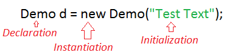

Чому java?
- затребувана
- об'єктно-орієнтована
- багатопотоковість
- раниться на будь-якій ОС
- широкий ранг програм
- десктопні програми
- веб-програми
- веб-сервери
- програми під Android
- робота з БД
- велика кількість допоміжних фреймворків, велика community.

Хмарні технології - віддалена обробка та зберігання даних. Використання ПЗ сервера як онлайн-сервіс -> можна робити складні обчислення.
DevOps (практика) = development+operations=розробка+тестування+експлуатація
Архітектура JVM
- A Virtual Machine is a Software implementation of a Physical Machine
- Java was developed with the concept of WORA ( Write Once Run Anywhere ) which runs on a VM.
- The compiler will be compiling the java file into a java .class file (contains bytecode).
- The .class file is input to JVM which Loads and executes the class file.

- Class Loader Subsystem - it loads, links and initializes the class when it refers to a class for the first time at runtime
- Loading - The Class Loaders will follow Delegation Hierarchy Algorithm while loading the class files. BootStrap-rt.jar,Extention - ext folder (jre\lib), Application - Environment Variable.
- Linking.
- Verify – Bytecode verifier will verify whether the generated bytecode is proper or not
- Prepare – For all static variables memory will be allocated and assigned with default values.
- Resolve – All symbolic memory references are replaced with the original references from Method Area.
- Initialization - all static variable will be assigned with the original values and static block will be executed.
- Runtime Data Area
- Execution Engine
- Interpreter – Reads the bytecode, interprets it and executes it one by one.
- JIT compiler compiles the entire bytecode and changes it to native code.
- Garbage collector of JVM collects only those objects that are created by new keyword.
Different Ways to Create an Object
1. Using new keyword

2. Using class.forName()
Class clasz = Class.forName("Demo");
Object obj = clasz.newInstance();
3. Using Class Loader and newInstance() Method
ClassLoader cl = Test.class.getClassLoader();
Test t = (Test)cl.loadClass("com.javainterviewpoint.Test").newInstance();
4. Using Object Deserialization
public class Sample implements Serializable
FileInputStream fileInputStream = new FileInputStream(filePath);
ObjectInputStream inputStream = new ObjectInputStream(fileInputStream);
Sample s2 = (Sample) inputStream.readObject();
inputStream.close();
5. Using Object Cloning – clone() method
public class Sample implements Cloneable
Sample sample1 = new Sample("World");
try
{
Sample sample2 = (Sample)sample1.clone();
sample2.show();
} catch (CloneNotSupportedException e)
{
e.printStackTrace();
}
Клас java.lang.Object
- equals
- hashCode
- clone
- toString
- getClass
- notify
- notifyAll
- wait
- finalize
JDK Components:
- Java Archive (jar)
- Java Compiler (javac)
- Java Disassembler (Javap)
- Java Debugger (jdb)
- Java HeaderFile Generator (javah)
- Documentation (javadoc)